There is a big wrestling themed crossword that gets filled in. Clues are wrestling themed, answers are not. Answer grid can be found here.
There are twenty six wrestlers, with images taken from 8 bit wrestling games. Here they are, identified:
| 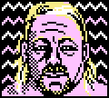 | Kevin Sullivan | 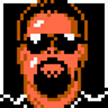 | Big Boss Man |
| 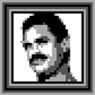 | Rick Rude | 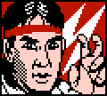 | Ricky Steamboat |
| 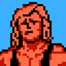 | Mr Perfect | | Andre the Giant |
| 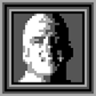 | Dustin Rhodes | 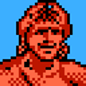 | Lex Luger |
| 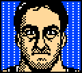 | Mike Rotunda | 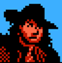 | The Undertaker |
| 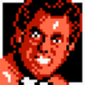 | Brutus Beefcake | | Ted Dibiase |
| 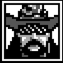 | Macho Man Randy Savage | 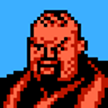 | Bam Bam Bigelow |
| 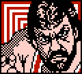 | Dr Death Steve Williams | 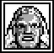 | Sid Vicious |
| 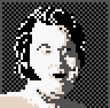 | Honky Tonk Man | 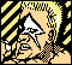 | Sting |
| 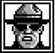 | The Mountie | 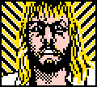 | Michael Hayes |
| 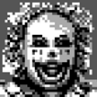 | Doink the Clown | 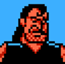 | Razor Ramon |
| 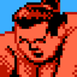 | Yokozuna | 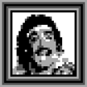 | Johnny B Badd |
| 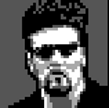 | Diesel | 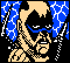 | Road Warrior Hawk |
Each wrestler has 3 clues associated with them, and in most answers, one letter is called out. So, each wrestler will have two or three letters associated with them – and these are all caesarian shifts of the initials of the wrestler’s real name, although the shift differs for each wrestler. Here’s the degree of shift for each wrestler:
| Wrestler | Real Name | From Crossword | Deciphered | Offset |
| Kevin Sullivan | Kevin Francis Sullivan | OJW | KFS | 4 |
| Rick Rude | Richard Erwin Rood | ANA | RER | 9 |
| Mr Perfect | Curtis Michael Hennig | YID | CMH | 22 |
| Dustin Rhodes | Dustin Patrick Runnels | SEG | DPR | 15 |
| Mike Rotunda | Lawrence Michael Rotunda | DEJ | LMR | 18 |
| Brutus Beefcake | Edward Harrison Leslie | HKO | EHL | 3 |
| Macho Man | Randall Mario Poffo | WRU | RMP | 5 |
| Dr Death Steve | Steven Williams | W A | SW | 4 |
| Honky Tonk Man | Roy Wayne Ferris | DIR | RWF | 12 |
| The Mountie | Jacques Rougeau | S A | JR | 9 |
| Doink | Matthew Wade Osborne | AKC | MWO | 14 |
| Yokozuna | Rodney Agatupu Anoa’i | VEE | RAA | 4 |
| Diesel | Kevin Scott Nash | LTO | KSN | 1 |
| Big Boss Man | Ray Walter Traylor | EJG | RWT | 13 |
| Rick Steamboat | Richard Henry Blood | SIC | RHB | 1 |
| Andre the Giant | André René Roussimoff | SJJ | ARR | 18 |
| Lex Luger | Lawrence Wendell Pfohl | UFY | LWP | 9 |
| The Undertaker | Mark William Calaway | RBH | MWC | 5 |
| Ted Dibiase | Theodore Marvin Dibiase | WPG | TMD | 3 |
| Bam Bam Bigelow | Scott Charles Bigelow | EON | SCB | 12 |
| Sid Vicious | Sidney Raymond Eudy | TSF | SRE | 1 |
| Sting | Steven James Borden | KBT | SJB | 18 |
| Michael Hayes | Michael Seitz | V B | MS | 9 |
| Razor Ramon | Scott Oliver Hall | WSL | SOH | 4 |
| Johnny B Badd | Marc Melo | T T | M M | 7 |
| Road Warrior Hawk | Michael James Hegstrand | ROM | MJH | 5 |
The degree of shift can be letter substituted to get “DIVORCED LINDA MARIE CLARIDGE”, which is Hulk Hogan. Since part of the puzzle involves getting real full names, the answer is TERRY GENE BOLLEA.